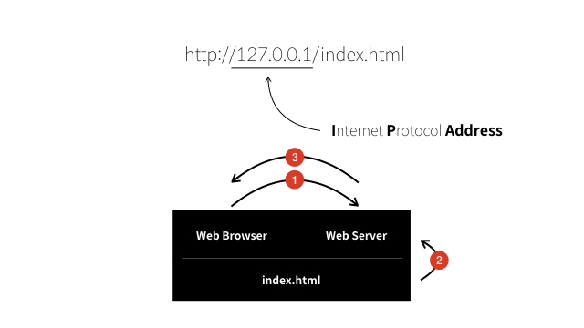

세상에 대한 비유이자 은유의 예술인 컴퓨터 공학 중 웹에 대해 배워보자.
Web ServerMaking
Server 설치하기
- Bitnami WAMP Stack에 가서 윈도우 체제에 맞는 버전을 다운로드 해준다.
- 아래는 모두 같은 내용이다.
- localhost(참고로 내 컴퓨터라는 의미의 특수한 주소)
- http://localhost/index.html(localhost와 같이 의미가 있는 이름을 도메인 네임)
- http://127.0.0.1/index.html(127.0.0.1처럼 번호로 되어 있는 것을 ip주소라고 부른다.)
여기서 index.html파일은 내 컴퓨터 내에 Bitnami wampstack이 설치된 디렉토리 apache-htdocs-index.html에 파일이다.
htdocs는 HyperText Documents를 뜻한다.즉 웹페이지가 저정된 디렉토리라는 의미.
- 지금까지의 관계를 정리하면, http://127.0.0.1/index.html을 웹브라우저에 입력하면 웹브라우저는 같은 컴퓨터에 설치된 웹서버에게 index.html을 요청한다.
웹서버는 웹페이지를 저장하기로 약속된 디렉토리인 htdocs에 가서 index.html 파일의 코드를 읽어서 웹브라우저에게 전송한다. 웹 서버는 코드를 해석해서 웹페이지를 표시한다.

- 이 때 그냥 브라우저에서 ctrl + o 해서 열 때와 다른 점. http://(HyperText Transfer Protocol)으로 시작했기에 http 통신규약에 따라 웹서버에 접속하게 된다.
이는 file://이 그저 웹브라우저가 파일을 직접 열어서 보여줬던 것과는 본.질.적.으로 다르다.
웹서버와 웹브라우저의 통신
- 웹브라우저가 웹서버에 접속하기 위해서는 웹서버가 설치된 컴퓨터의 주소(ip주소)를 알아야 한다.
- 제어판 - 네트워크 및 공유 센터 - 연결클릭 - 자세히 - IPv4 주소가 나의 IP주소 (내 노트북 IP주소는 172.30.79.225)
- http://172.30.79.225/1.html로 가면 파일이 열린다.
- 여기서 127.0.0.1과 172.30.79.225는 모두 내 컴퓨터를 가르킨다. 하지만 전자는 나 자신을 의미하는 일종의 대명사, 후자는 저 주소에 해당하는 컴퓨터를 가르키는 고유명사라 할 수 있다.
- 같은 네트워크에 접속한 컴퓨터 사이는 http://172.30.79.225/1.html로 접속 가능!